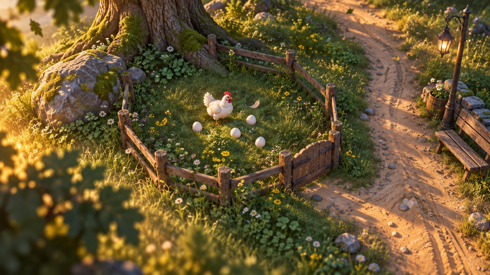
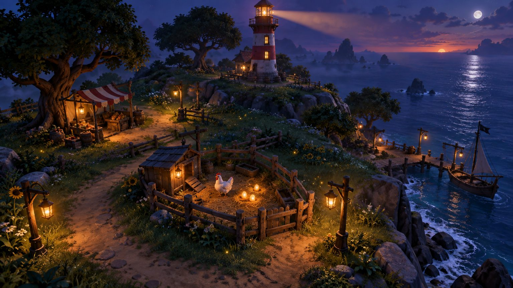
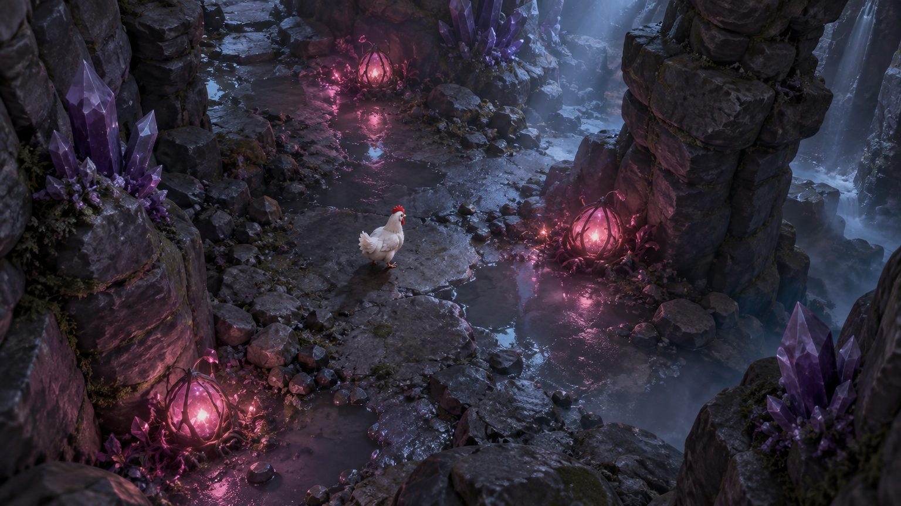
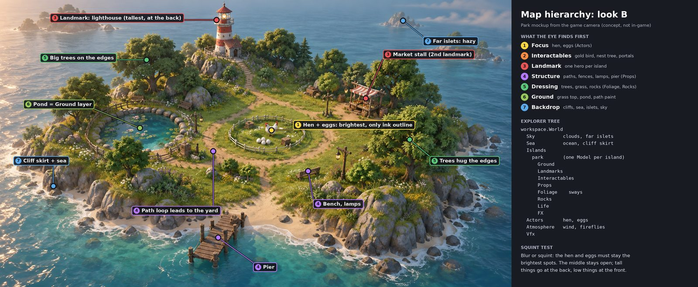

The rules for the world, light, ground, wind, sound and performance, with the exact Roblox setting for each. Every Studio step ends with a side-by-side against these target frames.
Sea of Thieves meets Fortnite meets Kena: real materials and real light, chunky readable shapes, something moving in every frame. The hen and her eggs are always the brightest thing on screen.



Target frames are AI concept art, not in-game captures. The camera in the dusk frame sits lower than the game camera (pitch 52°).
Code: src/shared/WorldTree.luau, spec: MAP_HIERARCHY.md. Every object lives in exactly one layer, and the layer decides its rules.

| Layer | Tier | Shadows | Sways | Material rule |
|---|---|---|---|---|
| Actors | 1 | yes | no | Brightest values in the frame, ink outline Highlight (the only one left) |
| Interactables | 2 | yes | no | Own light or glow, a cleared ring of ground around it |
| Landmarks | 3 | yes | no | Hero SurfaceAppearance (1024 px), slow motion only (beam, sails) |
| Props | 4 | yes | no | 512 px SurfaceAppearance, subtle studs allowed (man-made only) |
| Foliage | 5 | yes | yes | Instanced meshes (same MeshId), darkest and most varied greens |
| Rocks | 5 | yes | no | Moss on top faces, sunk 0.3 studs into the ground |
| Ground | 6 | no | grass blades | Terrain with the Painted* MaterialVariants, Decoration on |
| Sea / Sky | 7 | no | waves, clouds | Hazy and cooler, never brighter than the island |
Code: src/client/LightingPresets.luau. The active preset is golden, and the old cel look is kept as toy. Switch live in Studio with PlayerGui:SetAttribute("PeckwoodLook", "toy").
| Technology | Future |
| EnvironmentDiffuseScale | 1 (toy 0) |
| EnvironmentSpecularScale | 0.65 (toy 0) |
| ShadowSoftness | 0.22 (toy 0.12) |
| ColorCorrection | Sat 0.14 · Con 0.10 · Bri 0.015 |
| Bloom | Int 0.55 · Size 30 · Thr 1.2 |
| SunRays | Int 0.07 · Spread 0.55 |
| Atmosphere | Density 0.30 · Offset 0.14 · Glare 0.4 · Haze 1.4 |
With sky light on, the sky lights every surface, so the flat ambient lift drops and shadows get real depth. Specular at 0.65 gives wet stone and glossy eggs a sheen without plastic shine. Saturation comes down from 0.36 to 0.14 because real materials already carry colour. Haze 1.4 gives distance depth now that depth of field is out.
| Hour | Brightness | OutdoorAmbient | Ambient | ColorShift_Top | Fog |
|---|
Terrain.Decoration = true and GrassLength = 0.75. This is Roblox's own swaying grass, cheap on the GPU, set by the preset.One gust signal (IslandView.wind(t), from server time so every player shares it) drives everything, so grass, trees, particles and sound always move together.
| What | Driven by | Setting |
|---|---|---|
| Terrain grass blades | workspace.GlobalWind | direction (0.8, 0, 0.35), 5 + 12 × gust studs/s, updated at 10 Hz |
| Trees, bushes, flowers | IslandView sway (pivot at the base) | 0.018 rad × gust, two sines, 20 Hz, visible islands only |
| Leaves, pollen, petals | Ambience air emitter | rate and speed × gust, per-island palette |
| Wind sound | Soundscape | wind bed 0.45 + 0.55 × gust, a gust whoosh on each peak |
| Weather | Ambience (8-minute shared slots) | clear 62 % · breezy 24 % · rain 14 %, 20 s blends |
Code: src/client/Soundscape.luau, ids in src/client/AmbienceIds.luau (picked by roblox/tools/audio/find_sounds.py from free, licensed Creator Store libraries only). The mix follows the hen, the hour and the weather, so it is right everywhere without per-place scripting.
Sfx.setVolume("ambience", v)).Soundscape.setMuffled(true) low-passes the world (high −22 dB, mid −6 dB).Soundscape.duck(0.4, 2).| Slot | Kind | In use | Alternates | When it plays |
|---|
Pick by ear in Studio: swap the first id in AmbienceIds.luau with an alternate, or re-run the picker. All picks are free licensed library sounds (Pro Sound Effects via Roblox), so there is no upload or moderation wait.
| Budget | Limit | How |
|---|---|---|
| Triangles on screen | ≤ 60k per island | LOD on foliage, RenderFidelity Automatic, culling (IslandView already unparents islands off screen) |
| Draw calls | ≤ 300 | Instancing: same MeshId + same SurfaceAppearance for every copy of a tree, rock or bush |
| Shadow casters | big shapes only | CastShadow off below 0.6 studs (WorldTree.audit checks this), lamp PointLights Shadows = false |
| Particles | ≤ 200 live | Emitters follow the camera focus, not one per island |
| Sounds | ≤ 12 playing | Beds stop when silent, shots auto-destroy |
| Textures | 1024 / 512 / 256 | Hero / prop / dressing, shared trim sheets |
| EditableMesh | nearly full today | The cliff skirt uses most of it; new meshes come from Blender as MeshParts, not EditableMesh |
print(table.concat(require(game.ReplicatedStorage.Peckwood.WorldTree).audit(), "\n"))
PeckwoodLook) at 07:00, 12:00, 17:30 and 21:00 (PeckwoodHour), with screenshots next to the targets.PeckwoodWeather), on a deck and in the Mine. Note each slot to swap.